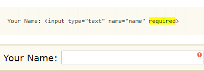
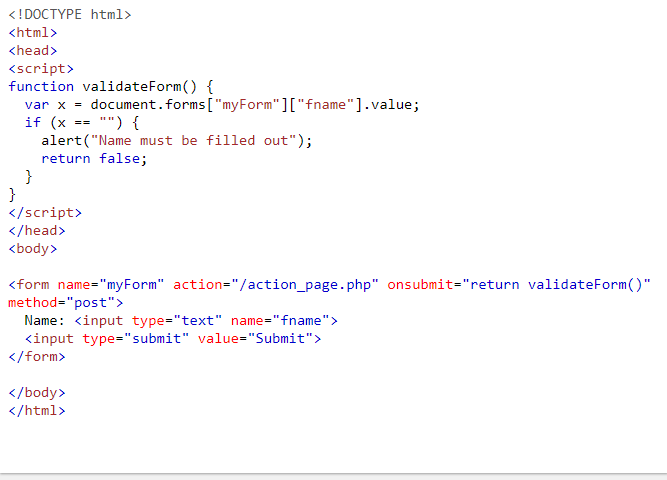

Week 10 - Validating forms, and Using Fetch
Validating forms
Forms are used in webpages for the user to enter their required details that further send it to the server for processing. First of all, the form must be checked to make sure all the mandatory fields are filled in. The data entered into a form needs to be in the right format and certain fields need to be filled in order to effectively use the submitted form. Username, password, contact information are some details that are mandatory in forms and thus need to be provided by the user. Below are basic forms validations:
For clarity let see the reason for validating a form below:
There are two different types of client side validation.
Built-in form validation
This type of client side validation uses HTML5 form validation features. Generally built in form validation does not require much JavaScript. Built-in form validation has better performance than JavaScript, thus does validation using validation attributes on form elements, such as this ones below:required:Specifies whether a form field needs to be filled in before the form can be submitted.minlength and maxlength: Specifies the minimum and maximum length of textual data (strings)min and max Specifies the minimum and maximum values of numerical input types
type: Specifies whether the data needs to be a number, an email address, or some otherpattern:Specifies a regular expression that defines a pattern the entered data needs to follow.The simplest change that can be done to a form is to mark a text input field as 'required', below is a sample image showing how the html is to be written:

JavaScript
This type of client side validation is customizable and is coded using JavaScript,this will enable one take control over the look and feel of native error messages or to deal with legacy browsers that do not support HTML's built-in form validation.The Constraint Validation API
This makes the following properties available for use on some form element DOM interfaces:validationMessageReturns a localized message describing the validation constraints that the control doesn't satisfy (if any). If the control is not a candidate for constraint validation
(willValidate is false)r the element's value satisfies its constraints (is valid), this will return an empty string.validityReturns aValidityStateobject that contains several properties describing the validity state of the element. below is some of theValidityStateproperties
patternMismatchtooLongmaxlengthtooShortminlengthrangeOverflowrangeUnderflowtypeMismatchvalidvalueMissingcheckValidity()setCustomValidity(message)
willValidateReturnstrueif the element will be validated when the form is submitted; false otherwise.

Validating against a regular expression
- A regular expression (regex) is a pattern that can be used to match character combinations in text strings, so regexps are ideal for form validation and serve a variety of other uses in JavaScript.
Below are some examples to let you how regex works
a- Matches one character that isa(notb, notaa, and so on).abc- Matchesa, followed byb, followed byc.ab?c- Matchesa, optionally followed by a singleb, followed byc. (acorabc)ab*c- Matchesa, optionally followed by any number ofbs, followed byc. (ac,abc,abbbbbc, and so on).a|b- Matches one character that isaorb.abc|xyz- Matches exactlyabcor exactlyxyz(but notabcxyzoraory, and so on).
For better understanding ad many more examples of regex please view this link Regular expressions
Validating with API
Validating HTTP Response Codes
Validating HTTP Headers
Using Fetch
Fetch has some interesting web function, below are some of it veru impoertant funtions:fetch() method provides an easy, logical way to fetch resources asynchronously across the network.fetch() won’t reject on HTTP error statusfetch() won’t send cross-origin cookiesfetch() takes one argument Headers
TypeError if a header name is used that is not a valid HTTP Header name. The mutation operations will throw a TypeError if there is an immutable guard. Otherwise, they fail silently.Headers' objects have a guard property, this is not exposed to the Web, but it affects which mutation operations are allowed on the headers object. Possible guard values are:
none:default.request:guard for a headers object obtained from a request (Request.headers).request-no-cors:guard for a headers object obtained from a request created withRequest.modeno-cors.response:guard for a headers object obtained from a response (Response.headers).immutable:guard that renders a headers object read-only; mostly used for ServiceWorkers
Response objects
Response instances are returned when fetch() promises are resolved, the most common response properties you'll use are:Response.status — An integer (default value 200) containing the response status code.Response.statusText — A string (default value ""), which corresponds to the HTTP status code message. Note that HTTP/2 does not support status messages.Response.ok — seen in use above, this is a shorthand for checking that status is in the range 200-299 inclusive. This returns a Boolean.The Response() constructor takes two optional arguments — a body for the response, and an init object.
Supplying request options
The fetch() method can optionally accept a second parameter, an init object that allows you to control a number of different settings:response.blob() - return the response as Blobresponse.text() - read the response and return as textresponse.arrayBuffer() - return the response as ArrayBufferresponse.formData() - return the response as FormData object response.json() - parse the response as JSONAn options object containing any custom settings that you want to apply to the request.The possible options are:
method :The request method, e.g.,GET,POST. The default isGET.headers :Any headers you want to add to your request, contained within aHeadersobject or an object literal withByteStringvaluesbodyAny body that you want to add to your request: this can be aBlobBufferSourceFormDataURLSearchParamsUSVStringorReadableStreamobject. Note that a request using theGETorHEADmethod cannot have a body.modeThe mode you want to use for the request, e.g.,cors, no-cors,same-origin, ornavigate. The default iscors.credentialsThe request credentials you want to use for the request:omit,same-origin, orinclude. The default issame-origin.cacheThe cache mode you want to use for the requestredirectThe redirect mode to use:follow,error, ormanual. The default isfollow.referrerAUSVStringspecifyingno-referrer,client, or a URL. The default isabout:client.integrityContains the subresource integrity integrity value of the request (e.g.,sha256-BpfBw7ivV8q2jLiT13fxDYAe2tJllusRSZ273h2nFSE=).